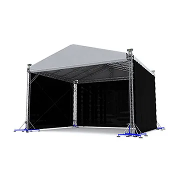

Browse All
Milos MR2 12 x 10 Roof system - Truss and canopy element
Description
The MR2 roof is a suitable choice for concerts, exhibitions and a large variety of outdoor events. The sloping frame construction gives the roof a dynamic look while allowing water to easily drain from the canopy. Contact us today for more information or to request a quote.
Key benefits
MR2 Saddle Roof structure for temporary events
MT1 self-climbing towers 32.81x19.69 ft, 32.81x26.25 ft, 39.37x32.81 ft options available
Fast connection for quick, simple and secure assembly
Operate with manual chain block or electric chain hoist (bracket required)
Supplied complete with internal wind bracing wires & connection accessories
Full structural calculation report & build manual available
PVC roof colour and side walls options
Integrated tower base / stage components available
PA wing options available on request
The MR2 roof is a suitable choice for concerts, exhibitions and a large variety of outdoor events. The sloping frame construction gives the roof a dynamic look while allowing water to easily drain from the canopy. Contact us today for more information or to request a quote.
Key benefits
MR2 Saddle Roof structure for temporary events
MT1 self-climbing towers 32.81x19.69 ft, 32.81x26.25 ft, 39.37x32.81 ft options available
Fast connection for quick, simple and secure assembly
Operate with manual chain block or electric chain hoist (bracket required)
Supplied complete with internal wind bracing wires & connection accessories
Full structural calculation report & build manual available
PVC roof colour and side walls options
Integrated tower base / stage components available
PA wing options available on request
CategoryOther Equipment
RangeBrowse All
Tagsstage roof